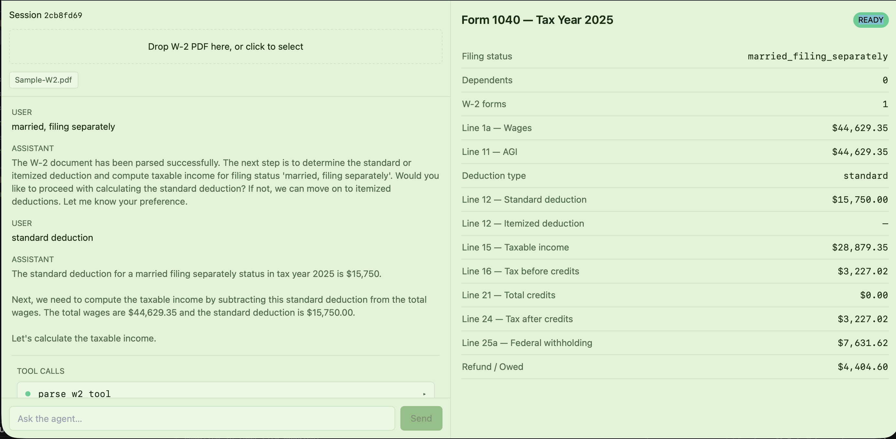

🖼️ Screenshot

Form 1040 preview panel with live agent tool call timeline after W-2 upload
🎬 Demo Recording
Full demo: upload W-2 → agent runs tools → Form 1040 preview rendered locally
🚀 What this does
W-2 Ingest
Parses uploaded W-2 PDFs with pdfplumber + Tesseract OCR fallback. Extracts wages, withholding, and all box fields.
IRS Rule Lookup
Loads 2025 IRS rules from local JSON tables — standard deductions, SALT caps, senior bonus deductions, and tax brackets.
Tax Computation
Pure deterministic calculations: standard vs. itemized deduction, taxable income, federal tax owed, and refund/owed balance.
Form 1040 Preview
Builds a live Form 1040 draft in the browser. Updates in real time as the agent completes each tool call.
🔒 Why local-first
This product is built for privacy-conscious users and developers. Everything runs on your machine:
- No OpenAI, Azure, or any remote LLM API calls
- No W-2 data ever leaves your computer
- LM Studio + Qwen2.5-7B-Instruct runs fully offline
- SQLite + local filesystem for all persistence
- Works in airplane mode after model download
🧠 System design
🛠️ Agent tool flow
irs_rules_2025.json📦 Local stack
| Layer | Technology |
|---|---|
| Backend | FastAPI + LangGraph agent orchestration |
| Frontend | Next.js 14 App Router + TypeScript + Tailwind CSS |
| LLM runtime | LM Studio at http://localhost:1234/v1 |
| Model | Qwen2.5-7B-Instruct (OpenAI-compatible endpoint) |
| Persistence | SQLite + local filesystem PDF storage |
| OCR | Tesseract (Homebrew on macOS / apt on Linux) |
| PDF parsing | pdfplumber + pypdfium2 |
| Tax data | Local JSON — brackets_2025.json, irs_rules_2025.json |
📁 Project layout
backend/ FastAPI + LangGraph agent + tool registry + W-2 ingestion
frontend/ Next.js App Router UI + Form 1040 preview components
storage/ Local SQLite databases + uploaded PDF files
tests/ pytest suites for parser, calculations, and rules
assets/ Screenshots and demo recording⚡ Run locally
1. Python environment
cd backend
python -m venv ../.venv
source ../.venv/bin/activate
pip install -e ".[dev]"2. Install Tesseract OCR
brew install tesseract # macOS
# apt-get install tesseract-ocr # Ubuntu/Debian3. Configure LM Studio
- Open LM Studio locally
- Load Qwen2.5-7B-Instruct (or any Qwen-family model)
- Start the local server — confirm it runs at
http://localhost:1234/v1
4. Environment variables
Create a .env file in the project root:
LM_STUDIO_BASE_URL=http://localhost:1234/v1
LM_STUDIO_API_KEY=lm-studio
MODEL_NAME=qwen2.5-7b-instruct5. Start the servers
# Backend
uvicorn backend.app.main:app --reload --host 127.0.0.1 --port 8000
# Frontend
cd frontend && npm install && npm run devOr use the helper script:
./run-dev.shOpen http://localhost:3000 in your browser.
🔌 API endpoints
| Method | Path | Description |
|---|---|---|
POST | /sessions | Create a new tax session |
POST | /sessions/{id}/documents | Upload a W-2 PDF |
GET | /sessions/{id}/return | Fetch the current draft return |
POST | /sessions/{id}/chat | Stream agent responses via SSE |